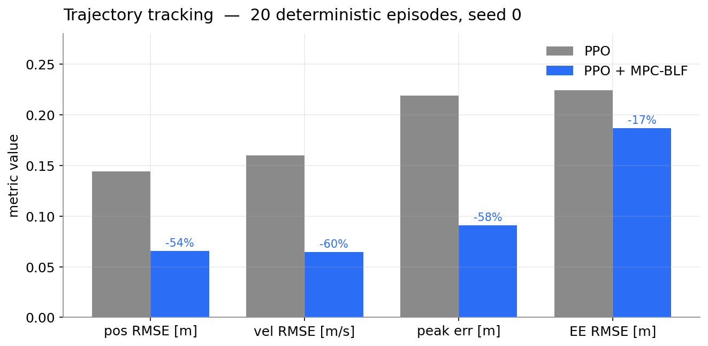
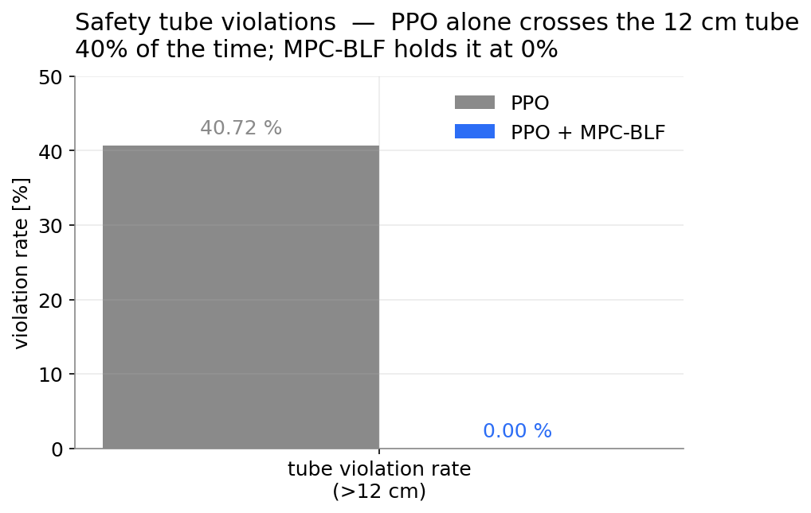
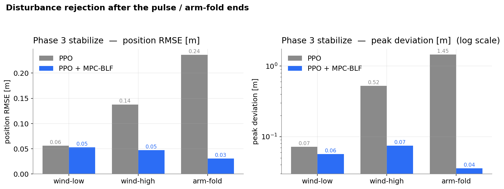
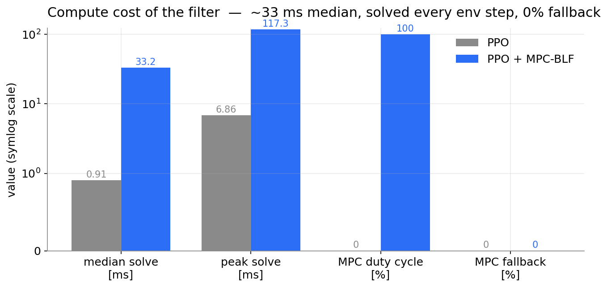

Skydio X2 quadrotor + 3-DoF arm in MuJoCo · PPO (7 M steps, SB3) · CasADi receding-horizon NLP (Fatrop)
During aggressive min-snap segments PPO peaks at 22 cm lateral error — 83% bigger than our 12 cm corridor.
A 2.5 N lateral pulse (wind-high) drives the baseline into a 52 cm post-pulse swing; it never settles within 10 s.
Holding the arm at [0, −1.5, 1.5] rad shifts the COM off-axis.
PPO crashes after ~12 s; it was never trained on this.
Goal: keep the base-position error strictly inside a
δ-tube at every control step, and stay
close to PPO whenever PPO is already safe.
reference PPO policy MPC-BLF filter MuJoCo min-snap ─▶ (learned, reactive) ─▶ (model-based, safe) ─▶ simulation (p*, v*) u_ppo ∈ R⁷ u_safe ∈ R⁷ 12-state
qpos + qvel + relative pose/vel to next ref point.U0..N-1 that minimise
‖U0 − uppo‖² — closest safe thing to what PPO asked for.V(e) = ‖e‖² / (δ² − ‖e‖²), e = p − p*
V(e_{k+1}) ≤ β_k · V(e_k) + σ, σ ≥ 0, k = 0…N−1
β_start = 0.95 (loose, near-term: errors are ≈ unavoidable)
β_end = 0.15 (strict, horizon end: force contraction)
ρ·σ² in cost (ρ = 1e3 – 3e3)
σ absorbs the motor-envelope
infeasibility, so the NLP almost never aborts.z = ‖ep‖² + α‖ev‖², penalises approaching the
tube with speed.σ ≈ 0, the planned trajectory is
forward-invariant in the δ-tube over the horizon.‖e‖ ≤ outer_tube keeps V well-defined
everywhere the NLP can wander.uppo if the hard
constraints become infeasible — measured rate ≤ 0.62%.Fatrop (structure-exploiting IP for OCPs) beat IPOPT by ~3× in median solve time and SQP in robustness.
| flag | symbol | traj | disturb | role |
|---|---|---|---|---|
--tube | δ | 0.12 m | 0.12 m | BLF tube radius; finite V iff inside |
--mpc-horizon | N | 7 | 7 | plan length at dt = 10 ms |
--mpc-stride | – | 1 | 2 | NLP solved every k env steps |
--beta-start | β₀ | 0.95 | 0.95 | loose near-term contraction |
--beta-end | βN−1 | 0.15 | 0.15 | strict terminal contraction |
--slack-penalty | ρ | 1e3 | 1e4 | weight on ρ·σ² in cost |
--velocity-penalty | wv | 5e4 | 5e4 | D-term on ‖v − v*‖² |
--barrier-velocity-weight | α | 0.03 | 0.1 | vel-aware barrier lookahead² |
--smooth-penalty | λ | 1e-2 | 1e-2 | ‖ΔUk‖² smoothing |
--mpc-solver | – | fatrop | fatrop | structure-exploiting IP |
Trajectory defaults picked by a grid sweep (scripts/tune_trajectory.py); disturbance defaults from
scripts/tune_wind_high.py + tune_arm_fold.py. Only σ-penalty and α change between regimes.


| metric | PPO only | PPO + MPC-BLF | Δ |
|---|---|---|---|
| position RMSE [m] | 0.1443 | 0.0658 | −54.4% |
| velocity RMSE [m/s] | 0.1599 | 0.0646 | −59.6% |
| peak tracking error [m] | 0.2192 | 0.0910 | −58.5% |
| tube violation rate (>12 cm) | 40.72% | 0.00% | −40.72 pp |
| goal reach rate (15 cm tol.) | 100% | 100% | — |
| crash rate | 0% | 0% | — |


Fatrop + stride=3 gives a 33% duty cycle and ~40 ms median solve. Stride=1 is needed for the tightest tracking, but doubles compute.
R(φ, θ, ψ) thrust rotation + Coriolis.σ with heavy ρ·σ²
penalty cured it without loosening the tube.Double-cover flips in qw caused the MPC
to see ±180° "jumps" and plan huge corrective torques.
Fix: canonicalise qw ≥ 0 before
extracting Euler angles.
The M matrix has to come from
actuator_gear × site_pos. Hard-coding a
symmetric X-config silently offset τz,
giving yaw drift in long episodes.
Cold start: ~140 ms and occasional Fatrop stalls. Warm start from previous solution: ~40 ms median and almost no fallbacks.
(β-schedule, ρ, α) all trade off solve time vs.
aggressiveness vs. damping. Separate grid sweeps per regime
(trajectory vs. disturbance) were needed; one-size-fits-all was
worse at both.
| mode | Δ pos max (PPO) | Δ pos max (MPC-BLF) | settle < 10 s | crash |
|---|---|---|---|---|
| wind-low | 0.0715 | 0.0565 | yes (8.97 s) | no / no |
| wind-high | 0.5231 | 0.0746 | no → yes (0.87 s) | no / no |
| arm-fold | 1.4479 | 0.0355 | — → yes (0.01 s) | YES / no |
z = ‖ep‖² + α‖ev‖² removes that
degeneracy.
Repo: controllers/mpc_blf_filter.py (safety filter) ·
env/aerial_manipulator.py (Gymnasium env) ·
eval_ppo_mpc.py (trajectory eval) ·
eval_ppo_disturbance.py (disturbance eval) ·
videos/METRICS.txt (all numbers in these slides).